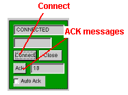
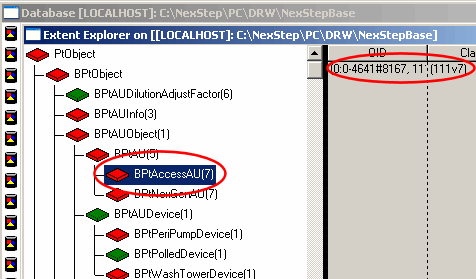
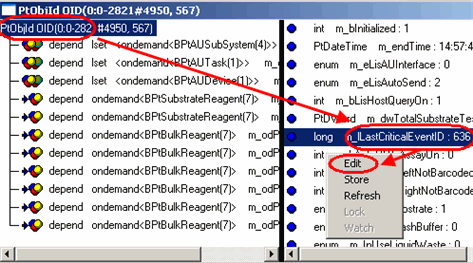

Clearing Jammed Critical Events - Windows 10
This procedure describes how to clear jammed messages between the AU and the console PC for a system running Windows 10.
- After launching the user interface, the instrument status does not transition from the red No message or Initializing status to either the blue Ready, green Running, or yellow Paused status.
- The Configuring Parameters message does not complete after more than 5 minutes.
- Initialization in Progress message occurs after more than 3 minutes.
- No communication to Instrument message occurs. This message can also occur when the machine control program on the AU is not running (program exited because of a hardware, sample, or reagent issue).
- The system is locked up with a Resetting Sink Events popup on top of the user interface
Jammed message communication between the instrument and the PC database can happen when a message stored on the AU becomes corrupted, or when the instrument is attempting to send a message with an event ID smaller than what the database is expecting. The database does not accept a critical event message that has an event ID lower than the ID of the last event received. The ID mismatch could happen if the critical events were deleted on the instrument, a database corruption occurred, or the database was replaced with an older copy during troubleshooting.
-
Restore communication. Check UI communication after each step and continue until communication is restored.
-
Reboot the PC and allow the UI to launch. If the UI does not launch, then diagnose communication errors in network error troubleshooting.
Note: When rebooting the Privacy & Security compliant Windows 8 or Windows 10 PC, you must enter security password "Access2Admin" when prompted to launch Windows.
 Note: Refer to the Troubleshooting Network Errors procedure.
Note: Refer to the Troubleshooting Network Errors procedure.- If the UI status indicates communication is restored, then proceed to the verification section of this document.
-
Reboot the PC and allow the UI to launch. If the UI does not launch, then diagnose communication errors in network error troubleshooting.
-
Troubleshooting procedures: Perform the appropriate procedure to correct the jammed critical event identified in the previous step.
-
Use the AU Com Test program to acknowledge instrument critical event messages.
Note: This procedure can be used to acknowledge (discard) an individual message from the instrument that might be blocking subsequent messages.
- On the console PC, press Windows key, type "AUCom" and select
AU Com Test program.
Note: The instrument must be powered on and the user interface open.
- Right-click anywhere on the red area of the connection box in the
AUComTest window to open a AU IP address pop-up.

- Enter the AU IP address 192.168.2.4, and then select OK.
- Select the
Connect button. The red box changes to a green box.

- Select the
ACK button to acknowledge the displayed critical event id and clear the first critical event message from the queue.
Note: The critical event ID is displayed in the dialog box.
- On the console PC, press Windows key, type "AUCom" and select
AU Com Test program.
-
Edit the database.
Note: This procedure may be needed following the use of the Restore Utility application. The Restore Utility may not reset the Last Critical Event ID entry in the database.
- Open the Fast database application.
- Press
Windows key, type "developer" or "administrator" and open the
Fast Developer or
Fast Administrator program.
Note: If the Fast Developer or Administrator does not start because the Fast Objects Server is not running, then start the Fast Objects Server. From the Windows desktop, simultaneously press the Windows key and the 'R' key to open the run application, typing ptserv32.exe on the text line, and selecting OK.
- In Fast browser, select .
- In the Host field, enter
LOCALHOST. In the Database field, enter
NexStepBase. Select
OK.
 Note: NexStepBase is case-sensitive.
Note: NexStepBase is case-sensitive. - Select .
- Press
Windows key, type "developer" or "administrator" and open the
Fast Developer or
Fast Administrator program.
- Scroll down to and select
BPtAccessAU(xx). Double-click on the text on the right side of the display to open the AccessAU OID entry.
Note: If more than one AccessAU OID entry is available, then there could be a client PC or previous system installation interfering with logging events. In the window that opens for each OID, confirm that additional entries do not have the same serial number or IP address as the system with the communication issue.

- In the AccessAU OID window, highlight the
m_ILastCriticalEventID entry. Right-click on the entry, select
Edit, and change the value to
0 (zero).

- In the AccessAU OID window, left-click on the PtObjId entry at the top left to highlight it. Right-click and select Store.
- Close Poet Developer. Launch the UI, if it was exited.
- Open the Fast database application.
-
Use the AU Com Test program to acknowledge instrument critical event messages.